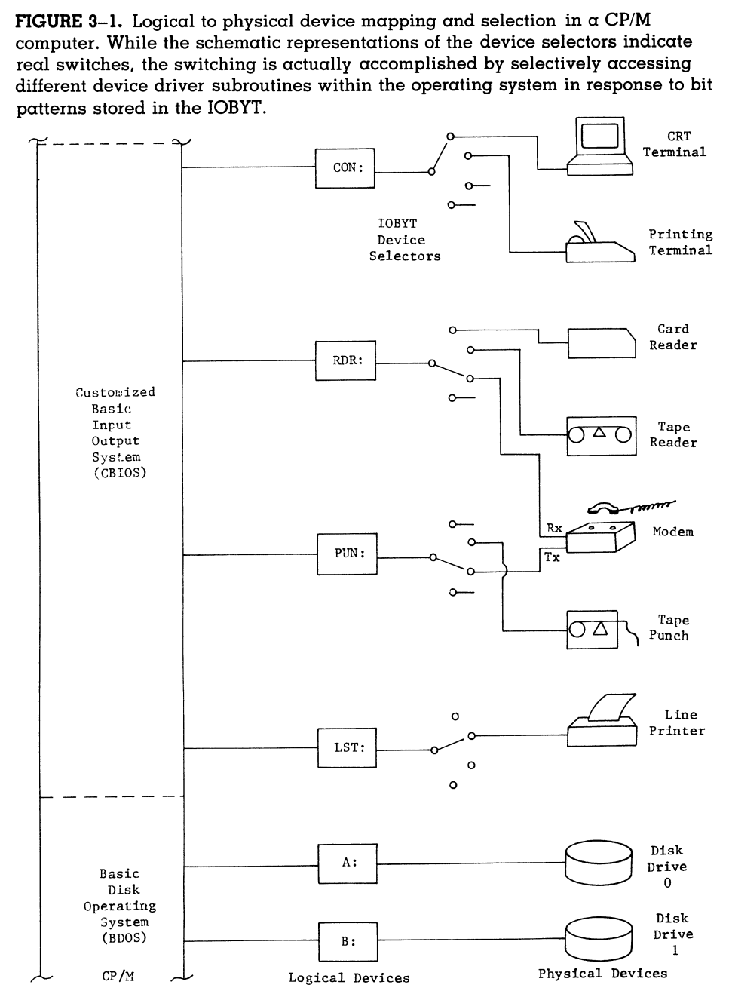

Overview
This week we will continue with our study of CP/M Assembly Language Programming: A Guide to the Integrated Learning of the CP/M Operating System & Assembly Language Programming, diving into the details of the CP/M operating system.
Wednesday, October 2nd
Classwork
Today in class we will discuss Chapter 3: The CP/M-Based Computer. This book thankfully only assumes a "minimum size microcomputer running some standard version of of the CP/M operating system." We are running CP/M version 2.2, the most recent of these "standard versions."
The author tells us that we will use the term CRT (which stands for cathod-ray tube) as the term we will use of the physical device we use to communicate with our computer.
In our specific case, our CRT will consist of our computer keyboard, together with a terminal application in which we run SIMH configured to emulate the Altair 8800 running CP/M.
We will need to make reference to Figure 3-1 as we proceed with our study:

Make note of the comment in the figure intro text that says [w]hile the
schematic representations of the device selectors indicate real switches,
the switching is actually accomplished by selectively accessing different
device driver subroutines with the operating system in response to bit patterns
stored in the IOBYT.
Also take a moment to reflect on our entire setup here in light of the statement I made in class last time that hardware and software are logically equivalent.
Homework
Read Chapter 4: What the Operating System Provides and Chapter 5: Organization of CP/M. Everyone should read both these chapters with an eye towards understanding. We won't be able to effectively use our systems if we don't understand how they work.
Anfal and Luis will present a summary of chapter 4, Akshay and Ved will present a summary of chapter 5 when we come to class next Monday.
Monday, September 30th
Classwork / Homework
Akshay and Ved will present a summary of Chapter 2: Software Components of the Computer System.